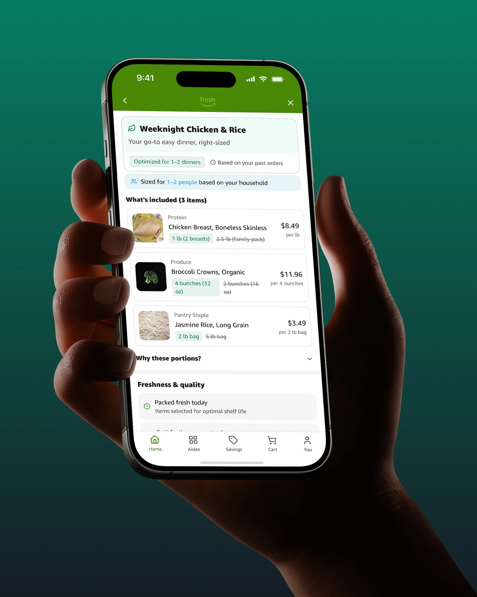
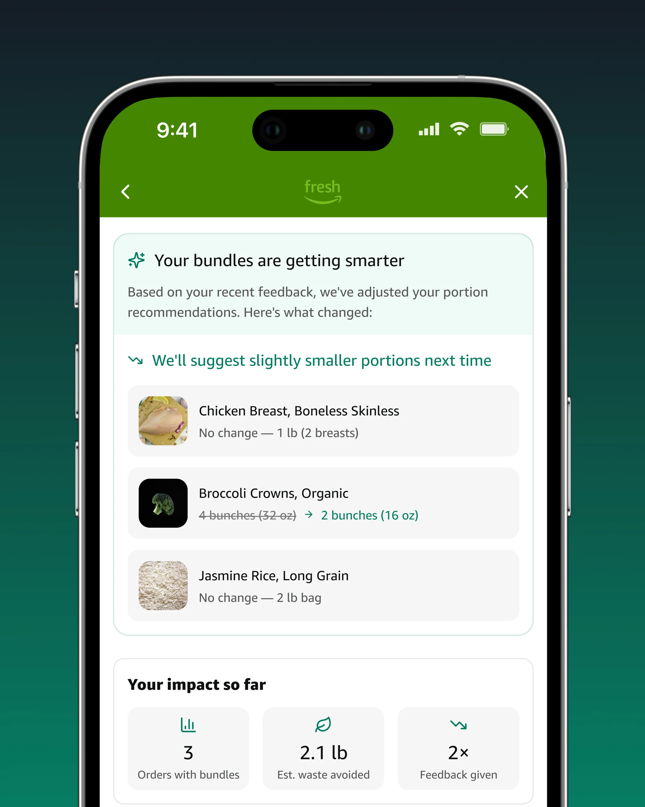

Discover bundles
Find ingredient combinations based on familiar shopping behavior, then open a bundle to see what’s included.
Amazon Fresh · Product design · 2026
Grocery shopping is built around what we buy. Smart Bundles asks what changes when we design around what we actually eat.
01 / Overview
An independent Amazon Fresh concept pairing flexible ingredient bundles with right-sized portions and a simple feedback loop. Familiar shopping, more thoughtful defaults.

02 / Problem & research
Household food waste starts before food reaches the fridge. Better quantity defaults can help people buy what they’ll use.
The opportunity starts with how much we buy.
03 / Pivot
Rigid meal kits didn’t fit everyday shopping. The opportunity: keep the flexibility, with portions that fit the household.
Change the default. Keep the habit.
04 / Solution
Ingredients that work together, portions you can edit, and a lightweight check-in that makes the next bundle smarter.

05 / Core flows
From discovery to the next order, the prototype explores how smarter defaults can fit into an existing shopping journey.
Find ingredient combinations based on familiar shopping behavior, then open a bundle to see what’s included.
Adjust portions and quantities before adding the bundle to the cart. Recommendations stay editable.
Keep the familiar delivery experience, with the right-sized order on its way.
Give optional feedback on what was too much or too little to inform future bundle sizes.
06 / System
What gets used informs the next recommendation. A simple feedback loop connects one order to the next.
07 / Intended impact
Help households waste less and make each basket more useful. These are pilot targets, not measured results.
Proposed pilot targets

08 / Reflection & next steps
Start with household testing, refine the portions, and measure whether the change lasts.